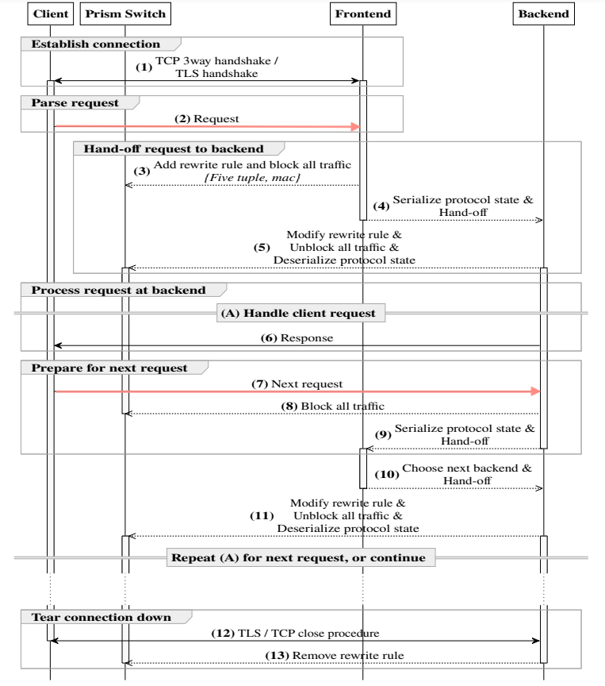

#240229 Prism: Proxies without the Pain(2021)¶
概要¶
这篇论文用了一个比较有意思的方法，通过 4 层和 7 层的联动，实现了 7 层的 DSR（Direct Server Response）。
以对象存储服务为例，客户端的请求进来会先经过一个 proxy-server，这个 proxy-server 解析请求，根据请求的 uri 找到对应的 object 所在的后端机器，然后将请求 proxy_pass 给后端的 object-server 来处理。和 4 层代理不同，这里面涉及到两条 TCP 连接，客户端和 proxy-server 之间、proxy-server 和 object-server 之间，所以 object-server 的响应只能先经过第二条 TCP 连接回给 proxy-server，再由 proxy-server 复制给第一条 TCP 连接回给客户端。
client <=> proxy-server <=> object-server
而本论文提出的方法就是让 proxy-server 将和客户端的 TCP 连接 迁移 给 object-server，从而让 object-server 能够直接和客户端通信。
client -> proxy-server -> object-server
^ |
|____________________________|
TCP 连接迁移的整体流程¶
TCP 连接迁移涉及在机器和机器之间迁移连接，所以只适用于 http/https 1.x GET 请求场景。迁移的时机就是服务端收到 GET 请求但还没开始响应的时候，此时客户端和服务端之间没有数据往来，TCP 和 TLS 的状态相对比较稳定。
定义涉及到的角色：
Switch: 交换机，Prism 论文里 4 层是用可编程交换机来实现的。
FE: FrontEnd，接收客户端请求，解析 uri 并找到实际处理请求的 BE，发给其去处理，比如上面说的对象存储服务里的 proxy-server。
BE: BackEnd，实际处理客户端请求的服务端，比如上面说的对象存储服务里的 object-server。
FE 和 BE 可能是同一个应用程序，只是在迁移中角色不一样
流程图：
{kind=link}
握手阶段 客户端和 FE 建立 TCP 连接，如果是 https 服务，完成 TLS 握手。TCP 对应的元组 <ClientIP, ClientPort, ServerFE, ServerPort> 。
请求解析 客户端发送请求到 FE，FE 解析请求，并根据请求的 uri 找到可以处理请求的 BE。
TCP 连接迁移 FE 通知 Switch 添加规则：
将 TCP 连接 <ClientIP, ClientPort, ServerFE, ServerPort> 的上行包丢弃，防止一些重传包导致连接被 RST。
FE 然后导出当前 TCP + TLS 的状态数据，连同客户端发送过来的请求数据一起发送给 BE，BE 根据 FE 发送过来的 TCP + TLS 状态数据恢复 TCP 连接，恢复的连接对应的元组 <ClientIP, ClientPort, ServerBE, ServerPort> 。恢复成功后，BE 通知 Switch 更新以下 3 条规则。
删除掉前面 FE 添加的丢弃上行包的规则。
添加规则：将 TCP 连接 <ClientIP, ClientPort, ServerFE, ServerPort> 的上行包重写为 <ClientIP, ClientPort, ServerBE, ServerPort>。也就是将之前发往 FE 的包发送给 BE。
添加规则：将 TCP 连接 <ClientIP, ClientPort, ServerBE, ServerPort> 的下行包重写为 <ClientIP, ClientPort, ServerFE, ServerPort>。这样后面虽然是 BE 在响应数据，但在客户端看来就好像是 FE 在响应一样。
后端响应请求 BE 处理请求，并在迁移过来恢复出的 TCP 连接上发送响应数据。
准备下一个请求处理 如果是长连接，客户端收到响应数据后紧接着会发送下一个请求，BE 收到请求后，可以将 TCP 连接和请求数据还迁回 FE，由 FE 开始新一轮请求的处理，当然如果 BE 有能力获取新请求的 BE 信息，此时 BE 就是新的 FE，直接开始新一轮请求处理也可以。
连接关闭 通知 Switch 删除处理过程中添加的规则。
关键技术和 API¶
TCP 状态的导出和恢复¶
使用 Linux 内核提供的 TCP_REPAIR 特性。论文作者提供了一个 libtcprepair 库封装了相关的操作。
https://github.com/YutaroHayakawa/libtcprepair/blob/master/tcprepair.c
libtcprepair 库有些参数没有迁移，比如 tcp 的 wscale 参数（会导致刚开始响应的包都是小包）等，这些缺少的可以参考：https://github.com/checkpoint-restore/criu/blob/criu-dev/soccr/soccr.c
导出/恢复需要调用的接口很多，实际生产环节中可以用内核模块合并这些操作，提供一个原子的接口。
TLS 状态的导出和恢复¶
迁移的时候，非对称加密的 TLS 握手阶段已经结束，已经进入对称加密的数据传输阶段，只需要将对称加密的相关状态数据同步到 BE 即可，这一块的原理可以参见： TLS——加密信道的建立 。
Prism 修改了 tlse 库，提供了 TLS 状态的导入导出功能， 详细见：https://github.com/YutaroHayakawa/Prism-HTTP/blob/master/src/extern/tlse.c
内核 TCP 连接释放事件监控¶
7 层在关闭连接后，内核中的 TCP 连接并不是立刻释放的，而是要等和客户端的 4 次挥手完了之后才会释放，所以需要修改内核暴露接口给 7 层，在底层连接完全释放之后再通知 Switch 删除所有的规则，提前删除可能会导致连接无法正常结束。
https://github.com/YutaroHayakawa/Prism-HTTP/blob/master/patches/linux-4.18.diff
4 层¶
可编程交换机这个不是必须的，相关的功能可以在 4 层负载均衡上实现，并且可能更简单。
首先，在 4 层负载均衡中添加一个 7 层重定向跟踪表，这个表通过接口暴露给 7 层，7 层将连接迁移之后，将迁移的连接信息及迁移的目标 BE 写入表中。4 层负载均衡在正常的转发逻辑之后，检查 TCP 连接是不是在 7 层重定向跟踪表中，如果在，将原包封包后转发给 BE。
因为 4 层负载均衡中提供服务的是 VIP，BE 上是绑定了 VIP 了，所以 BE 上恢复连接后就相当于原始连接了，不用再做复杂的地址重写，FE 转发过来的封包直接解包就能续上接着处理。
当然，绑定 VIP 这一步甚至也不是必须的，通过 #240730 IP_TRANSPARENT 和策略路由 还可以让 BE 直接恢复非本机 IP 的连接。
上面 内核 TCP 连接释放事件监控 这个也不是必须的，7 层重定向跟踪表中连接可以跟 lvs 一样，采用老化的方法来删除连接。